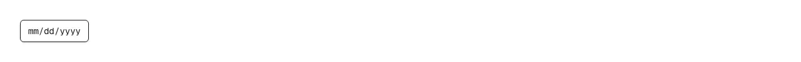

A date field you type into, one segment at a time, that emits an ISO "YYYY-MM-DD" string. Use it for date of birth and signup forms, booking and check-in/check-out dates, card expiry, invoice and due dates, report ranges, and admin filters — anywhere the reader already knows the date and wants to type it rather than hunt for it in a month grid. Common asks it answers: "date input", "date field", "typed date entry", "dd/mm/yyyy input", "segmented date field", "date of birth input", "birthday field", "keyboard accessible date picker", "date picker without a calendar", "react-day-picker alternative", "input type=date replacement", "styled native date input". shadcn/ui ships no typed date entry: its calendar is a month grid you click, and the Date Picker page composes that calendar into a popover behind a read-only trigger button, so the only keyboard route is arrow-keying around a grid; input-otp is segmented but for fixed-length codes with no date meaning. This is the typing half, and it composes with calendar rather than replacing it. The work is in the parts that are easy to get wrong. Segment order comes from the locale through Intl, so en-US renders month/day/year, en-GB and de-DE day/month/year, and ja-JP year/month/day, instead of the hardcoded M/D/Y that silently means the wrong day for most of the world; the calendar is pinned to Gregorian, so a Buddhist or Japanese-era locale cannot hand back the year 2569 or 8 to be emitted as though it were Gregorian. The day is clamped whenever the month or year changes, so January 31 switched to February becomes the 28th — or the 29th in a leap year, by the full 4/100/400 rule — instead of the silent rollover into March that a raw Date gives you. Auto-advance is decided by range rather than by a fixed two-digit count: typing 5 into the month jumps straight to the next segment because no month starts with 5, while 1 waits for a possible 10, 11 or 12, and a pair that cannot exist starts a new number instead of dropping the keystroke. Arrow keys step a segment, wrapping month and day, clamping the year, and seeding an empty segment from today; Backspace clears and steps back; Home, End and left/right move between segments. Each segment is a spinbutton with its own label and value range, and the month is announced by name rather than as a bare number. Values outside min/max are flagged with aria-invalid without ever blocking typing, the way a native date input behaves. Works controlled or uncontrolled, forwards a ref to the first segment so a shortcut can focus it, and mirrors the ISO value into a hidden input for native form submit. Theme-aware via shadcn tokens; no dependencies — no date library, no react-day-picker.

Rendered on the shadcn default neutral palette with harness-generated props.
pnpm dlx shadcn@4.21.0 add @pulld/date-input
| licence | POINTER |
|---|---|
| primitive base | none |
| type | registry:ui |
| files | src/components/ui/date-input.tsx |
| npm deps pulled | none beyond the pre-installed peer set |
| registry deps | — |
| semantic / palette / hex | 8 / 0 / 0 |
| writes shared ui/ | yes — can overwrite the project’s own primitives |